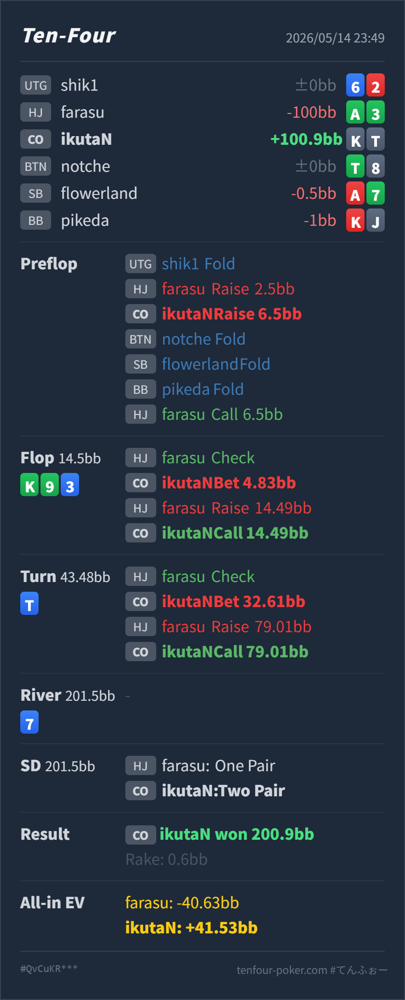

T4 HAND REVIEW
CO K♠T♠ の HJ open 3bet pot / turn top two call レビュー
GTO基準ではHJ 2.5BB openに対して、CO K♠T♠ はcallと3betを混ぜられる境界寄りのハンドです。3betするなら 6.5BB はやや小さく、7.5BB 前後まで上げたいです。flopの小さめcbetとcheck-raise callは許容で、turnにtop two pairを作った後のbet/callは良い判断です。
Hero: CO
K♠ T♠Villain: HJ
A♣ 3♣Board:
K♣ 9♣ 3♦ T♦ 7♦- 主要論点: HJ openにCOで
K♠T♠を小さめ3betし、K♣ 9♣ 3♦flopでcheck-raiseを受けた後、turnT♦のtop two pairでraise all-in相当をcallしてよいか。 - GTO基準の総評: preflopはハンド選択より3betサイズが主な改善点です。flopはtop pairで続行できますが、clubなしのKTsは強すぎるわけではありません。turnはtop two pairで、追加call額に対して十分強いのでcallで問題ありません。
- 次回の判断基準: 3bet potでtop pairを守る時は、自分のkicker、flush blocker、相手のcheck-raiseレンジを確認します。turnでtwo pairに改善したら、set/straightだけを恐れて降りすぎません。
- 5枚役確認: River時点のHeroは
K♠ K♣ T♠ T♦ 9♣のtwo pairです。Villainは3♣ 3♦ A♣ K♣ T♦のone pairで、Heroが勝っています。
ハンド要約
- Hero
- CO
K♠ T♠ - Villain
- HJ
A♣ 3♣ - 形式
- T4 6MAX Cash
- Preflop
- UTG fold, HJ Villain raise
2.5BB, CO Hero raise6.5BB, BTN fold, SB fold, BB fold, HJ Villain call6.5BB - Board
K♣ 9♣ 3♦ T♦ 7♦- Flop
- Pot
14.5BB, HJ Villain check, CO Hero bet4.83BB, HJ Villain raise14.49BB, CO Hero call - Turn
- Pot
43.48BB, HJ Villain check, CO Hero bet32.61BB, HJ Villain raise to79.01BB, CO Hero call - River
- Pot
201.5BB, no action - Showdown
- HJ Villain one pair, CO Hero two pair
- Result
- CO Hero won
200.9BB, rake0.6BB - All-in EV
- HJ Villain
-40.63BB, CO Hero+41.53BB

判断のズレ
| 論点 | その場で置いた見立て | どこがズレやすいか | 次回の基準 |
|---|---|---|---|
| preflop 3bet | KTsでCOから押し返せそう | 3bet自体は候補ですが、HJ 2.5BB openにCO 6.5BB は約2.6倍で小さめです。相手に広くcallされやすく、postflopで難しいspotが増えます。 | IPでも2.5BB openには 7.5BB 前後を基本にする |
| flop check-raise対応 | top pairなのでcallできる | Heroはtop pairですが、kickerはTでclubもありません。HJのcheck-raiseにはset、KQ/KJ、強いclub draw、pair + drawが混ざります。 | KTs no clubは続行候補だが、かなり上位ではない |
| turn bet/call | top twoだがraiseされて怖い | T♦ でHeroはtop two pairに改善します。HJのvalueにはQJ/99/33/K9/T9がありますが、A♣3♣のようなpair + drawも残り、追加call額に対して降りるほど弱くありません。 | top twoはbet/call。raiseに対して必要勝率を見て降りすぎない |
ストリート別レビュー
| ストリート | その時点の見え方 | 実ハンドの位置づけ | 評価 | その場の一手 |
|---|---|---|---|---|
| Preflop | HJが 2.5BB openし、COから3betする場面です。 | K♠T♠ はsuited broadwayで、callも3betも候補に入ります。ただしHJ open相手なので、無条件のvalue 3betではありません。 | サイズ小さめ | 3betするなら 7.5BB 前後が自然です。6.5BB は安く、相手にかなりcallされやすくなります。 |
Flop K♣ 9♣ 3♦ | 3bet potでHeroはtop pairを作り、boardはclub drawとstraight drawが多いです。 | Heroはtop pairですが、T kickerでclubなしです。強いhandではありますが、check-raiseに楽に突っ込めるほどではありません。 | 可 | 小さめcbetは良いです。check-raiseにはcallで続行できますが、clubなしKTsはturn以降の大きな圧に注意します。 |
Turn T♦ | HJが再度checkし、Heroはtop two pairに改善しています。 | Heroはかなり強いvalue handです。QJのstraightやsetには負けますが、Kx、T9、pair + draw、club drawには大きく勝っています。 | 良い | 32.61BB betで良いです。checkでpot controlするより、drawとpairからvalueを取ります。 |
| Turn raise対応 | HJが 79.01BB へraiseし、Heroは追加callを求められています。 | Heroはtop two pairで、full houseへの改善もあります。相手に強いvalueはありますが、A♣3♣のようなsemi-bluffも十分あります。 | 良い | callで良いです。ここをfoldすると、turnで改善したかなり強い部分まで降りすぎになります。 |
River 7♦ | turnで実質all-inになり、riverはdiamondが増えます。 | Heroはflushではありませんが、Villainもflushではなく、two pairで勝っています。 | 良い | 追加判断はありません。turn callの時点で正しく資金を入れられています。 |
持ち帰り
- preflopの主な修正点はサイズです。HJ
2.5BBopenに対してCO6.5BBは小さめなので、3betするなら7.5BB前後を基本にします。 K♠T♠は3bet候補ですが、HJ相手では境界寄りです。相手がtightならcall寄り、foldしすぎる相手なら3bet寄りにできます。- flopのtop pairは続行できますが、clubなしKTsは万能ではありません。check-raise call後は、turnのカードと相手サイズをよく見ます。
- turnでtop two pairに改善したら、強くvalueを取りに行ってよいです。raiseされても追加call額に対して十分強く、今回のcallは良い判断です。
exploit 補足
- 実戦のVillainは
A♣3♣で、bottom pair + nut flush drawからflop check-raiseし、turnも強く押しています。このタイプには、top pair以上を早く降りすぎるとかなり損します。 - 一方で、HJのcheck-raiseがset/straightに強く偏る相手なら、flopの時点でKTs no clubの続行頻度を少し落とします。相手がdrawを強く押すタイプなら、今回のようにturn top twoをしっかりcallします。